📍 場所
阪急曽根駅
🏮 営業年数
開業して9年！
🥡 新業態
沖縄専門テイクアウト店 2年目

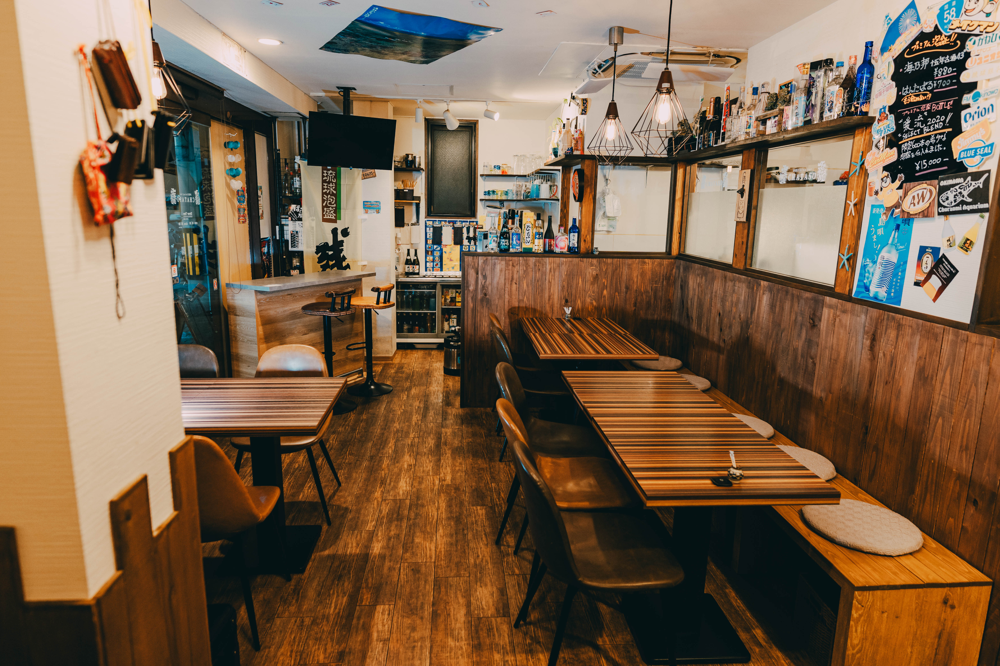
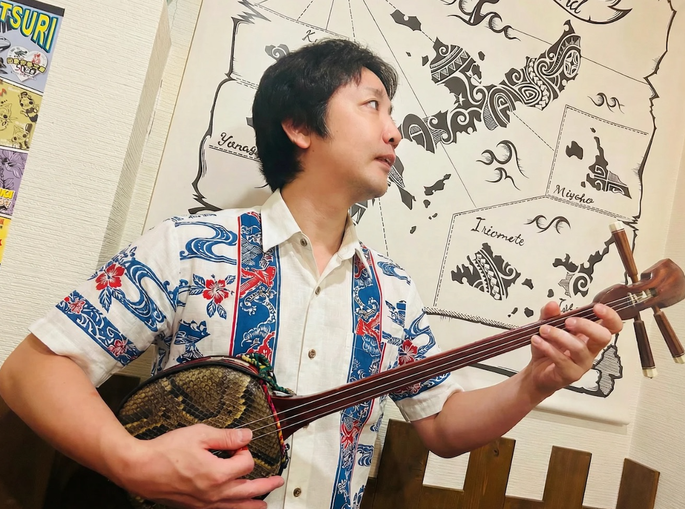



堅苦しくなく
「ユンタク（おしゃべり）」感で楽しもう！
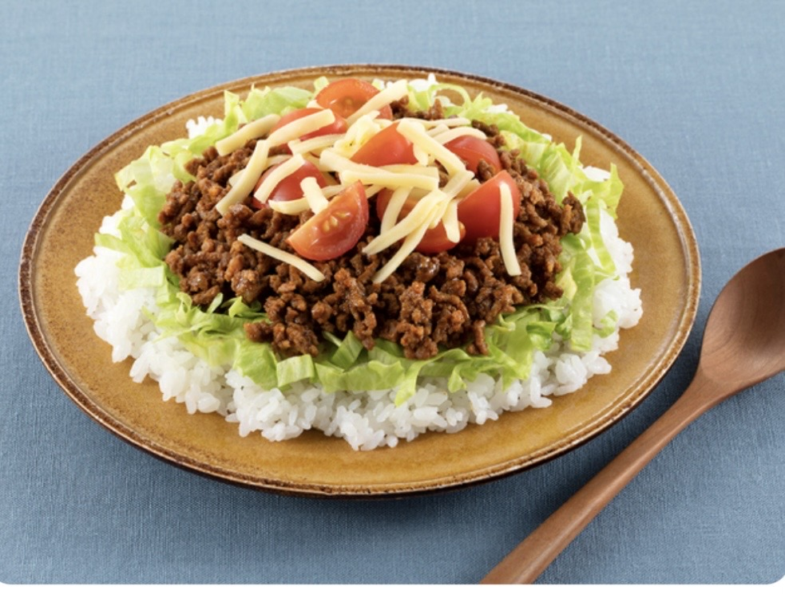
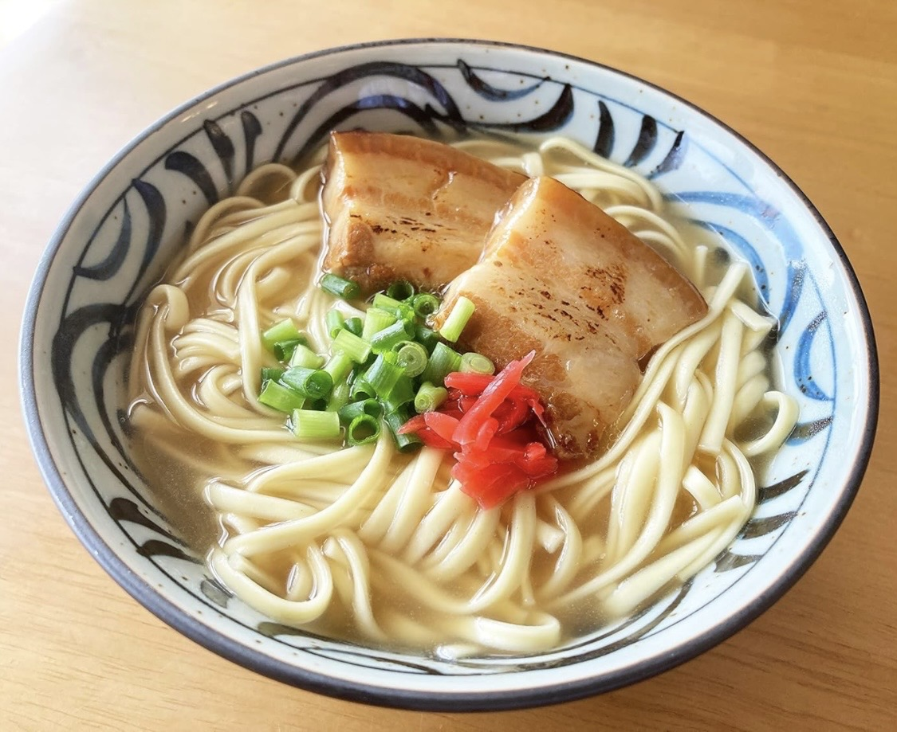

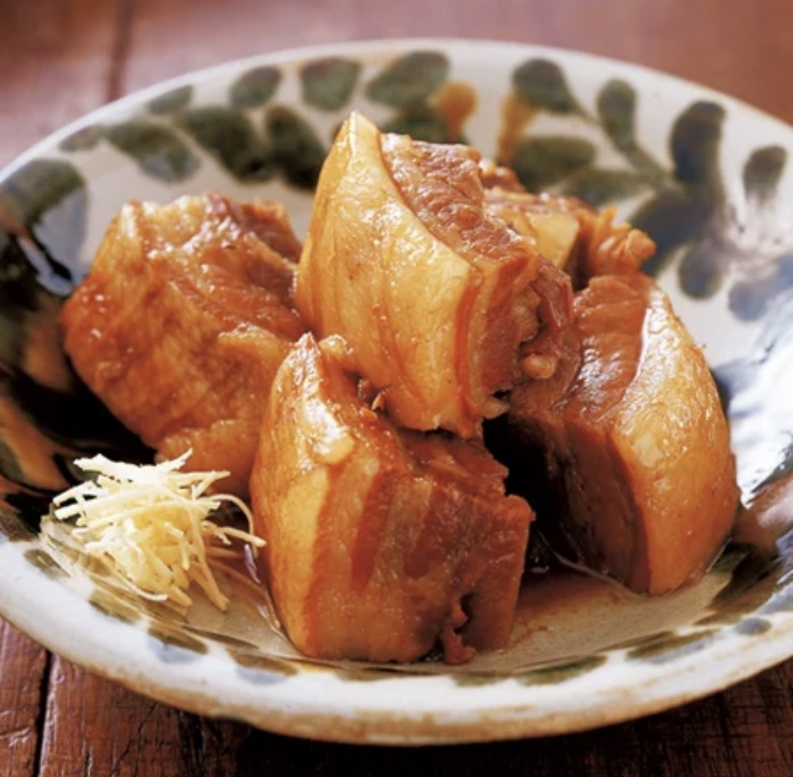

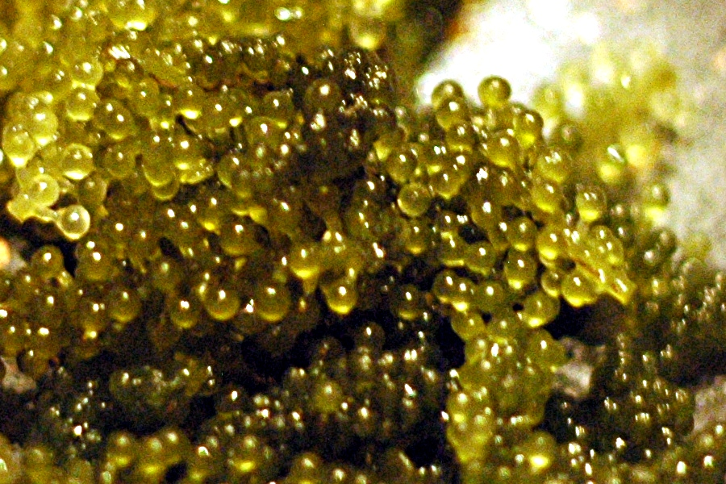
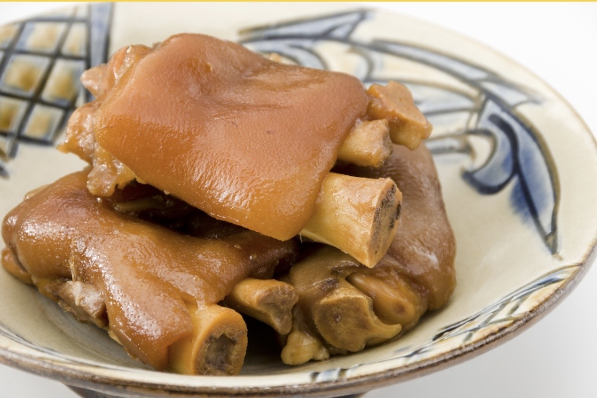
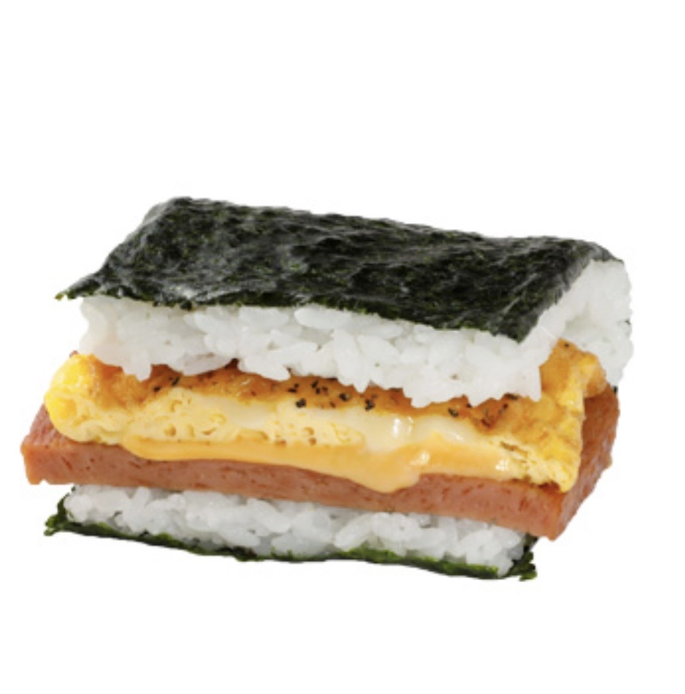

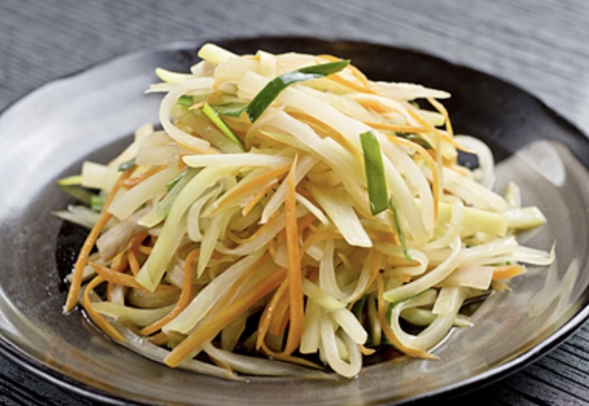
沖縄は色々な国の文化がまざりあった場所🌏
それがチャンプルー文化！
「見た目は完全にうどん！でも名前はそば😂」
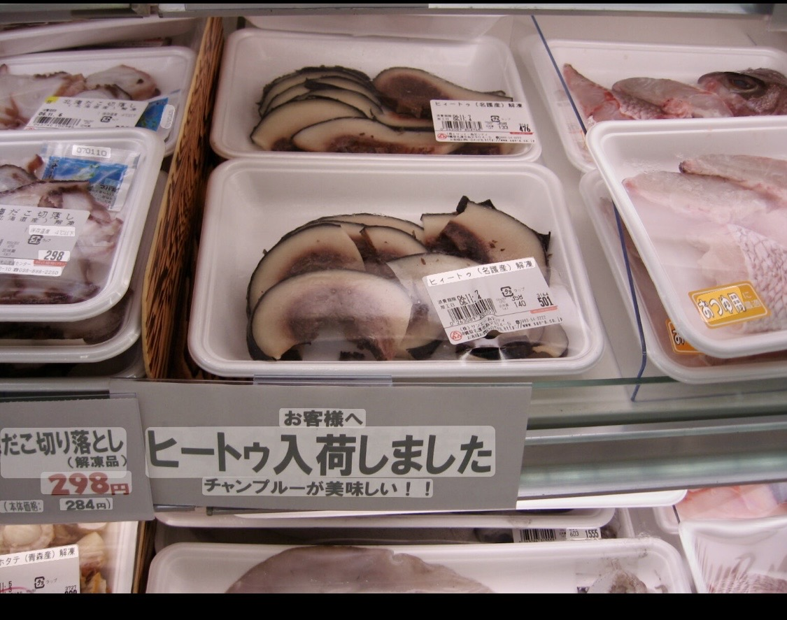
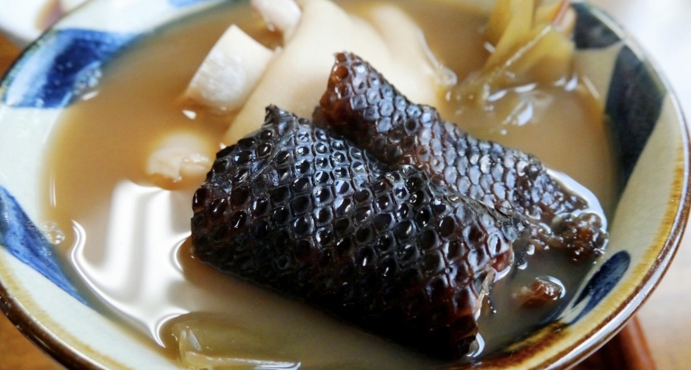
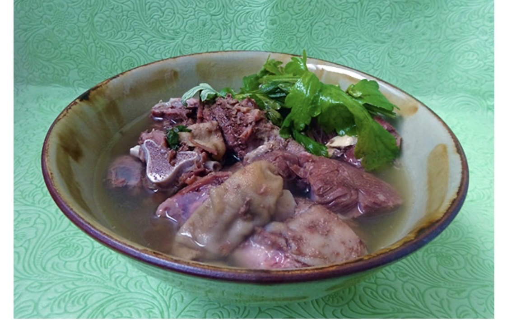
次から紹介するもの…
みんな食べたことある？🤔
けっこう衝撃かも…！
煮付けや汁物に！昔から
滋養強壮の食べ物として珍重されてます💪
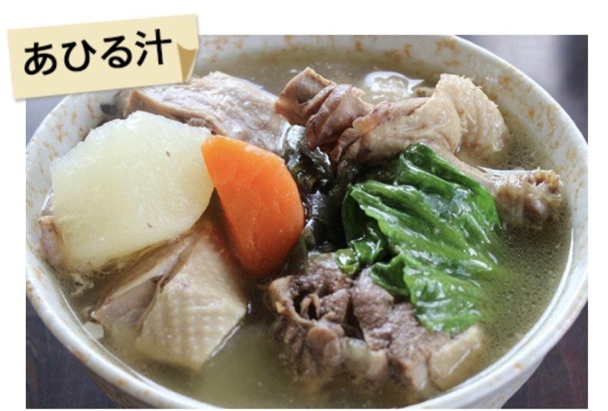
「食べ物はすべて命の薬だ！」
沖縄の医食同源の考え方✨
食べることで体も心も元気になる！

これを使えたら旅行でも
絶対ウケる！😆
一緒に練習しよう！

一緒に沖縄の音楽を楽しもう！🎵
声も出していいよ〜！
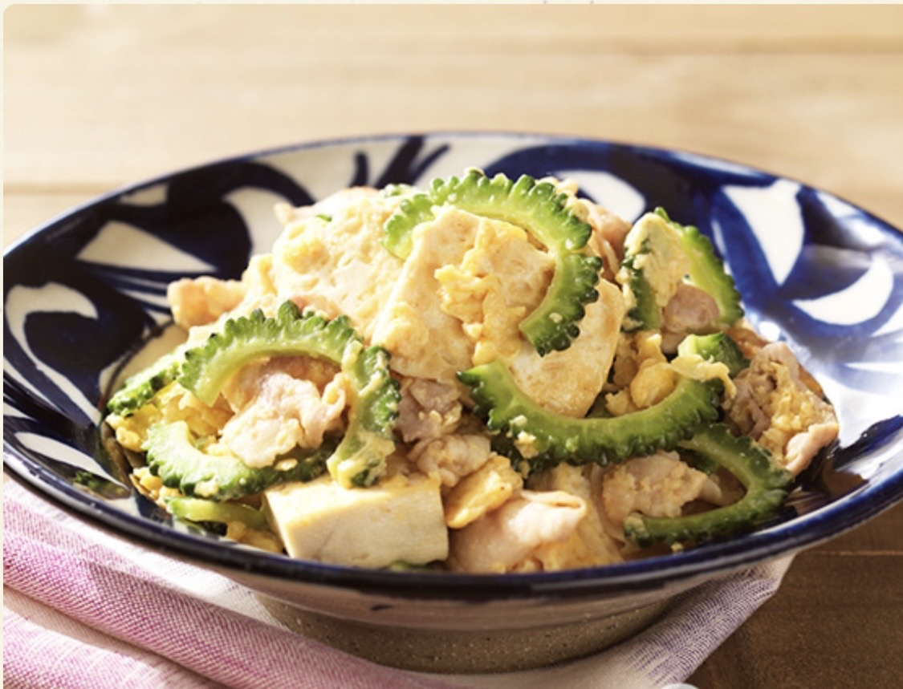
今日はありがとうございました！
修学旅行、めっちゃ楽しんできてね！🌺
現地でぜひ沖縄語を使ってみよう！
これが沖縄の正式なあいさつです！
一緒に言えるかな？🌺
「はいさいぐーすーよーちゅーがなびら！」
色々な文化が混ざり合った「チャンプルー文化」
が沖縄の食の原点！🌏
修学旅行では、沖縄の文化・言葉・
人との交流をぜひ楽しんでください！🌺